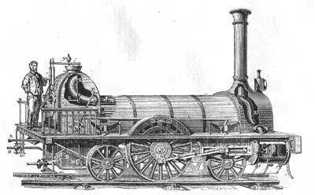
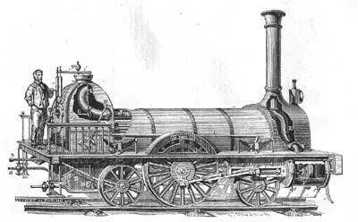

LA RIVOLUZIONE INDUSTRIALE
La rivoluzione industriale nasce in Inghilterra nei primi del 1700 per poi concludersi intorno ai primi dell'800. Scienziati in tutta l'Inghilterra, infatti, non fanno altro che scoprire e inventare nuove tecnologie portando avanti un vero e proprio sviluppo tecnologico in moltissimi ambiti come ad esempio nel campo meccanico con la macchina a vapore, nel campo tessile con il telaio meccanico, nel campo della comunicazione con il telegrafo fino ad arrivare addirittura ad uno sviluppo nel campo dei mezzi di trasporto con la locomotiva a vapore. Quindi per rivoluzione industriale intendiamo un vero e proprio fenomeno di meccanizzazione dove i processi industriali passano dalle mani degli operai alle macchine.

Apri l'articolo
Apri l'articolo
 Il minatore George Stephenson costruì la prima locomotiva rivoluzionando così il sistema dei trasporti terrestri, permettendo il passaggio da quelli a trazione animale a quelli a trazione meccanica, fino a diventare sinonimo di "macchina".

Il minatore George Stephenson costruì la prima locomotiva rivoluzionando così il sistema dei trasporti terrestri, permettendo il passaggio da quelli a trazione animale a quelli a trazione meccanica, fino a diventare sinonimo di "macchina".

Apri l'articolo
Macchina a Vapore
L'invenzione della macchina a vapore, avvenuta alla metà del XVIII secolo ad opera dell'inglese James Watt, è stata di vitale importanza infatti la sua applicazione nel settore tessile, metallurgico e dei trasporti contribuì allo sviluppo industriale in maniera determinante.
Apri l'articolo